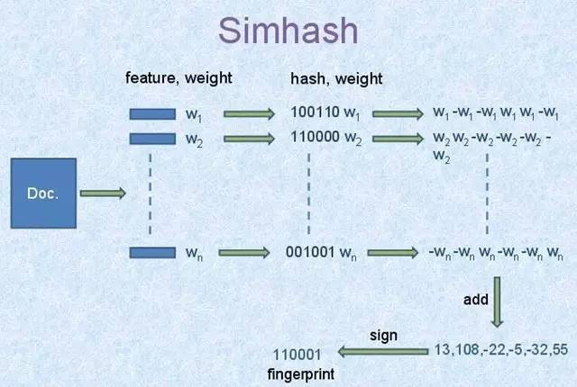

传统的Hash当源数据有些许的变化的时候生成的哈希值差异也非常的大， 比如：
|
|
s1的哈希值是65396ee4aad0b4f17aacd1c6112ee364、s2的哈希值是27444ee2d245c3e8e11ed8b9b035c43b,源数据仅仅是一个逗号的区别，但是哈希值完全不一样。这是我们使用Hash的常见的场景，输出的哈希值经常被称为消息摘要（message digest）或摘要（digest）。
局部敏感哈希(Locality-sensitive hashing， 简称LSH)则不同， LSH则希望相似的源数据计算出来的哈希值越相近越好。
LSH经常用在判重、文章摘要、聚类、相似搜索、近邻查找等场景， 用来减少高维度的数据的维度，相近的数据放在同一个桶中。 比如大规模异常滥用检测：基于局部敏感哈希算法——来自Uber Engineering的实践
学术定义Locality sensitive hashing总是不那么容易让人理解，本文也不试图从学术的角度去介绍LSH, 而是介绍一个特定的LSH算法：simhash。
通用的LSH会基于某个点与点之间的某种距离判定相似性，相近的点距离接近，也就是说，我们可以通过计算距离来比较对象的相似性。距离之间的测量可以分为两大类：
- 欧几里得距离(Euclidean): 基于空间中的点计算距离
- 普通的欧几里得距离
- 曼哈顿距离(Manhattan distance)
- 闵可夫斯基距离(Minkowski Distance)
- 非欧几里得距离: 不是根据空间中的位置，而是根据点的属性计算距离
- 杰卡德距离(Jaccard distance): 1-杰卡德相似系数
- 余弦距离(Cosine distance)
- 编辑距离(Edit distance)
- 汉明距离(Hamming Distance)
当然还有一些距离的计算公式， 比如切比雪夫距离(Chebyshev Distance)、马氏距离(Mahalanobis distance)、Pearson距离等。
这些计算距离的方法会应用在不同的场景中，有时候也会使用不同的距离计算方法进行比较。
不同的LSH会使用不同距离计算方法：
- HyperplaneLSH 使用余弦距离
- Super-Bit Locality-Sensitive Hashing 使用汉明距离
- Min Hash 使用杰卡德相似系数
- Min-wise independent permutations
- Nilsimsa Hash
- Random projection
simhash是Google的爬虫用来文档去重。 simhash最牛逼的一点就是将一个文档，最后转换成一个64位的字节，然后判断重复只需要判断他们的特征字的距离是不是小于n（根据经验这个n一般取值为3），就可以判断两个文档是否相似。这大大简化了文档相似性的比较。
Simhash由Moses Charikar, google 2006年做了minhash和simhash的大规模数据的比较，2007年Google说使用simhash用作爬虫去重，使用minhash做新闻个性化。

simhash的计算也很简单，
- 首先抽取文档的关键字， 比如前10个关键字，以及它们的权重(feature, weight), 记录为[(feature1, weight1), (feature1,weight2), ..., (featuren,weightn)]
- 计算feature的hash值，记为[(hash(feature1), weight1), (hash(feature1),weight2), ..., (hash(featuren),weightn)], 如图，假设hash值的bit数为6位，图中第一个feature1的hash值为100110, 权重位weight1。
- 然后对这些值按位进行累加，如果这个位是1,则该位上加上他的权重weight,如果是0，则减去weight，最后生成一个6个数字，每个位上一个数字，例如上图中位[13, 108, -22, -5, -32, 55]
- 将数值转换成0,1即可 [13, 108, -22, -5, -32, 55] -> 110001, 正值为1,负值为0即可
这样，就可以将一个文档映射成一个数字了，上图中使用6bit,你可以选择合适的大小，比如64比特，可以转化成一个uint64整数。
下一步就是根据simhash值计算两个文档的相似度，使用汉明距离计算，可以方便的使用xor操作。
|
|
这个例子中A和B的汉明距离为3。
go标准库中已经有快速计算一个整数的二进制形式中包含1个数的函数：bits.OnesCount64， 使用 <<Hacker's Delight>>中介绍的算法。
Go有几个simhash的实现， 比如mfonda/simhash、AllenDang/simhash、simhash-lsh、safeie/simhash, 但是对于中文来说，还需要一个中文分词和抽取关键字的功能，这些库对中文不友好，中文文档的比较可以使用yanyiwu/gosimhash以及修改版HaoyuHu/gosimhash。
##
- https://en.wikipedia.org/wiki/Locality-sensitive_hashing
- http://web.mit.edu/andoni/www/LSH/
- https://medium.com/engineering-brainly/locality-sensitive-hashing-explained-304eb39291e4
- https://towardsdatascience.com/understanding-locality-sensitive-hashing-49f6d1f6134
- http://jacoxu.com/locality-sensitive-hashing归总/
- http://infolab.stanford.edu/~ullman/mining/2009/similarity3.pdf
- https://janzhou.org/lsh/
- http://www.cs.princeton.edu/courses/archive/spring04/cos598B/bib/CharikarEstim.pdf
- https://cloud.tencent.com/developer/article/1082465